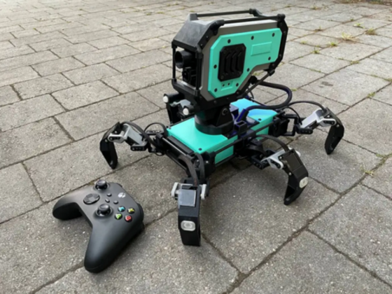

Welcome to zzbot
Steam Deck as a new controller
Hey everyone! Recently I shipped an update to robot’s software, now it can be controlled from a steam deck!
Search and rescue walking robot
Hey! Checkout my new robot! It’s a hexapod (And how to build it)!

This robot was originally designed by AlexKorvin at thingiverse. When I first saw the robot – I instantly decided to build one. But when I learned more about it- I decided not just build it, but redesigned it a little bit and to significantly improve electronics.
Originally proposed solution (by AlexKorvin):
- Arduino for control
- Separate transmitter for live video
- PS-2 controller + RC hardware for remote control
I didn’t like following designed decisions:
- Use multiple separate systems to transfer signal (video and controls)
- Use old PS-2 controllers from aliexpress
- Lack of persistent storage for configuration
So I decided to redesign it.
I took the original firmware from the Thingiverse project (C code for arduino) and completely rewrote it in python, alongside fixing some bugs and improving functionality. The code here.
I also designed a few additional parts to mount Raspberry Pi and PWM boards.
Also checkout detailed instructions on how to build it! #TODO
RC Tank 2
So it turned out that some guy from thingiverse called Staind made new revision of RC Tank.
I thought it will be great opportunity to spend little bit more time with my descendants by printing and then building this tank together. Meet RC Tank 2 (for now without electronics, but I’ll fix this latter)
It is bigger, heavier but also has some drastic improvements:
- Designed for brush-less drivers (less power consumption, less heat)
- Ability to adjust track tension (it really cool, because over the time tracks become loos and you may face driving wheel slipping problem)
- Mountpoint for GoPro
- Much easier assembly
I thought it is also a good point to try new remote control protocol. So instead of Raspberry PI and WiFi I decided to use Arduino and NRF24L01 modules. Is is also implies that I will be unable to use android phone to control the tank (like with previous one) and most likely i will need to build RC Controller. But I’ll figure it out later
Over-engineering
So I received my youtube bottle and unfortunately it arrived with broken cap. Here is short video how problem have been solved.
RC Tank
So I found some pretty interesting project on thingiverse called RC Tank. Basically it is self-propelled tracking platform. It is assumed to use general RC equipment, but I decided to go another way.
Noticed that small white part right in the center of the tank. Under this white cover you will find main electronics
More details you can find on RC Tank project page
True Story
So basically I decided to recreate this blog once again (4th time).
Let’s start with true, but very sad story about ambitious, but failed project. This is a story about how I tried to build fully sized humanoid robot. Take a look